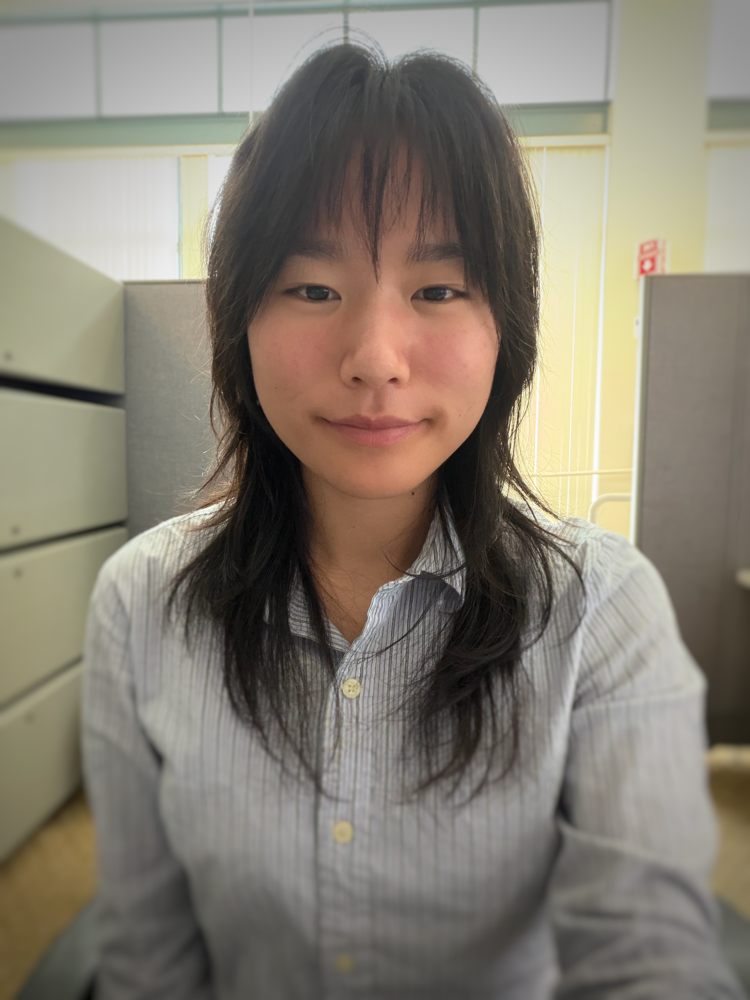
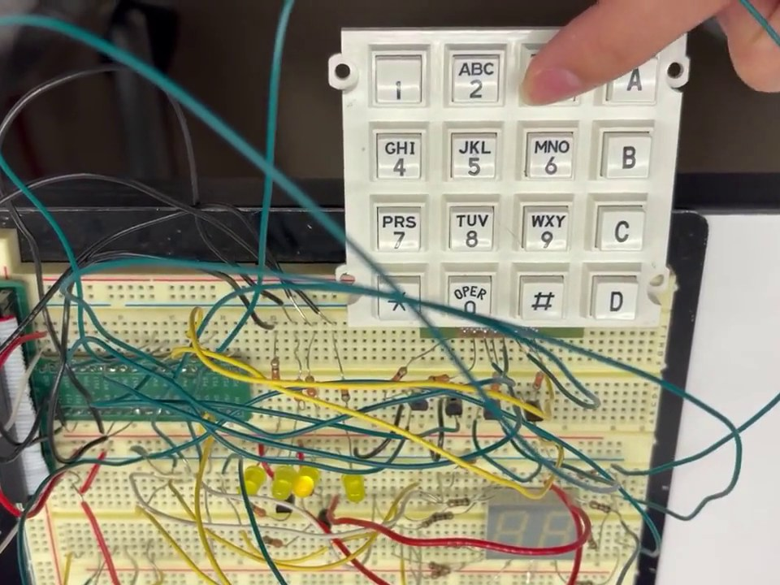
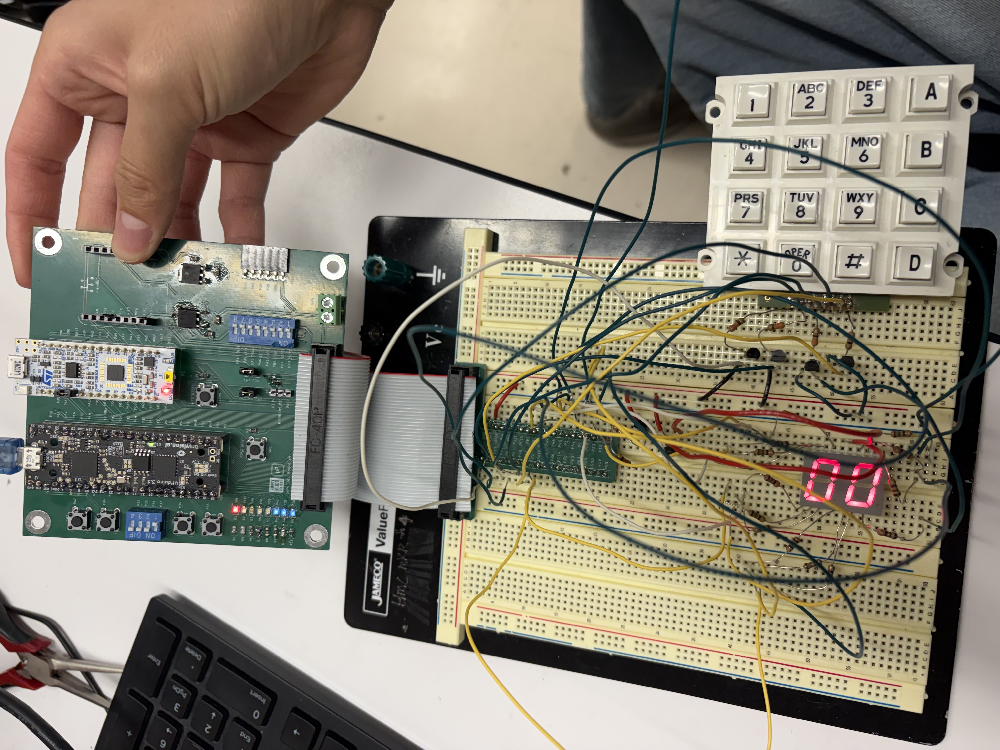
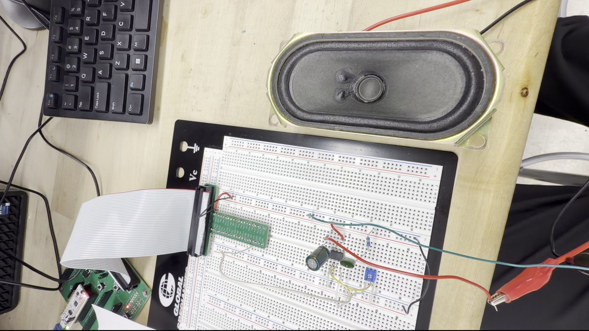
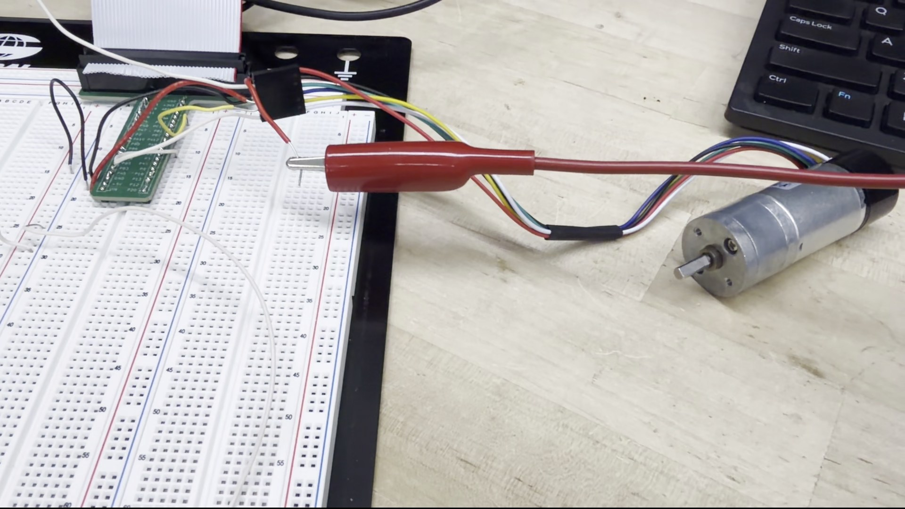
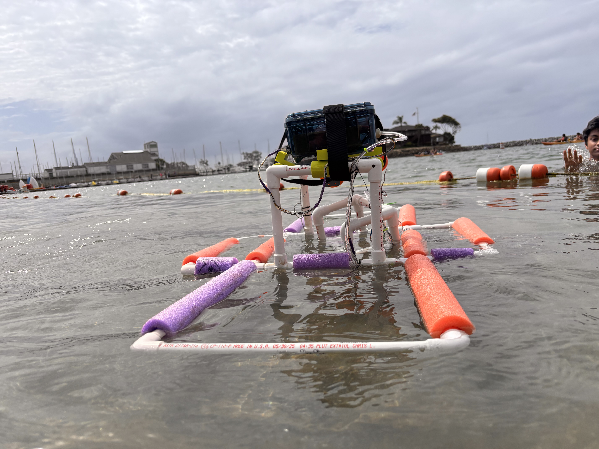
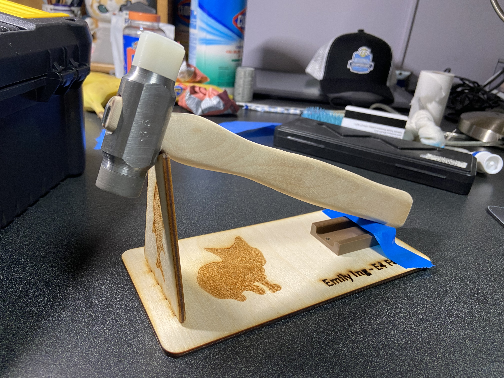

Engineering at Harvey Mudd College
Emily Ing
I'm Emily, a junior engineering major solving problems at the intersection of mechanical and electrical engineering.Currently, I'm working for MiniMed as an R&D Manufacturing Engineer Contractor to create a clamping mechanism that secures CGM sensor plates to electroplating fixtures.
Feel free to explore my experience, projects, and resume.

Experience
R&D Manufacturing Engineer Contractor
MiniMed · Harvey Mudd Engineering Clinic Program Claremont, CA
- Design and prototype a clamping mechanism in SolidWorks to secure continuous glucose monitor sensor plates to electroplating fixtures, cutting cycle time for 192 torquing motions per lot and improving ergonomics
- Collaborate with MiniMed engineers and a student team through weekly design reviews, incorporating manufacturing and quality feedback to align the fixture with production requirements
Water Resource Control Engineer Intern
California State Water Resources Control Board Los Angeles, CA
- Automated regulatory reporting for 400+ permitted facilities with R scripts, replacing a manual staff workflow
- Built an ArcGIS Pro map and Experience Builder dashboard with dynamic search, charts, and distance filtering
- Inspected landfills for permit compliance, flagging leachate collection deficiencies and communicating findings to dischargers
Undergraduate Researcher, Bioprinting Lab
Harvey Mudd College · Department of Engineering Claremont, CA
- Design and prototype a multichannel printhead in SolidWorks for precise, consistent bioink dispensing
- Engineer a UV print bed (8–10 mW/cm²) to photopolymerize PEG-acrylate hydrogels for tissue models
- Design acrylic UV enclosure to protect users and remove environmental variables from the curing process
CAD Tutor & Lab Grader
Harvey Mudd College · Department of Engineering Claremont, CA
- Lead weekly SolidWorks office hours, teaching CAD, FEA, and simulation to support the course's team projects
- Grade SolidWorks lab assignments and give feedback to reinforce CAD proficiency across the course
Projects
A mix of mechanical, electrical, and embedded engineering projects.

FPGA Dual 7-Segment Display & Keypad
Designed a modular SystemVerilog display with a shared seven-segment decoder, DIP-switch digit control, and a counter-based keypad scanner that lights an LED on each keypress.

FPGA Keypad Scanner
Built a 4×4 keypad scanner that displays the last two hexadecimal digits pressed. Added debounce behavior so a held key registers once and additional presses are ignored until release.

STM32 Digital Audio
Wrote TIM6/TIM7 drivers for note frequency and duration, then calculated timer settings to play tunes through an LM386 amplifier with notes within 1% of target pitch.

STM32 Motor Speed & Direction
Measured motor speed and direction from a quadrature encoder using interrupts on both sensor channels.

Autonomous Surface Vehicle
Built and deployed a surface vehicle to measure ocean pollution at depths of 0–2 m on a $50 budget. Designed and waterproofed analog signal-conditioning circuits for pressure, turbidity, and temperature sensors.

Custom Hammer
Designed and built a custom hammer.